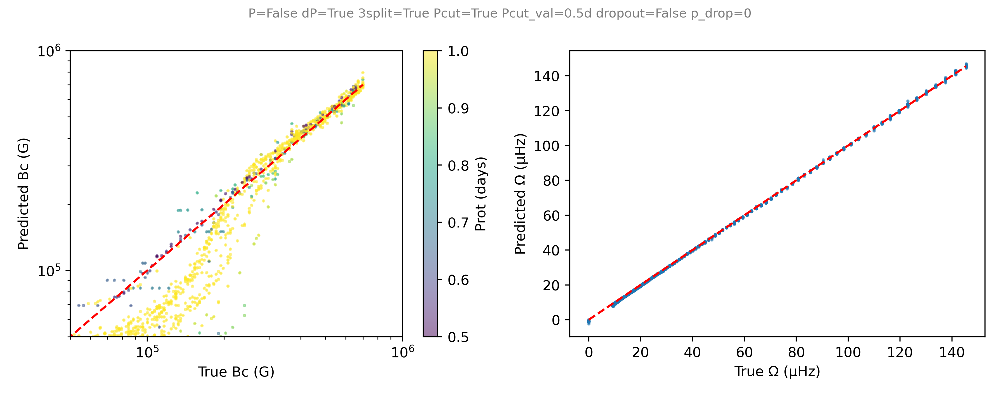
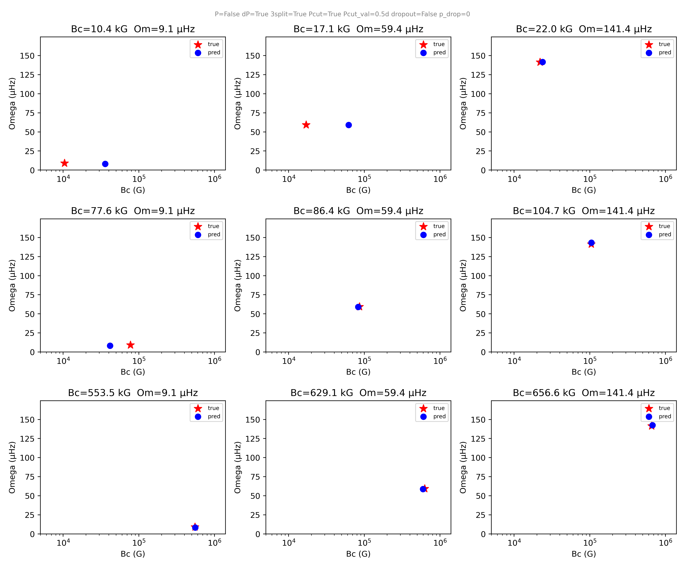

Inferring Internal Magnetic Fields and Rotation in Stars with Machine Learning

Main sequence stars can harbor strong internal magnetic fields whose origins and influence on stellar evolution remain poorly understood. Gravity modes - stellar oscillations restored by buoyancy deep in the stellar interior - carry direct imprints of interior stellar structure and offer a rare observational window into otherwise inaccessible regions. The Kepler space telescope has revealed these oscillations in several hundred γ Doradus (γ Dor) stars, which are oscillating intermediate-mass main sequence stars, through their characteristic period-spacing patterns, the nearly uniform spacing between consecutive radial modes that encodes rotation, chemical gradients, and magnetic field strength.
I developed a machine learning pipeline to jointly infer the internal magnetic field strength Bc and internal rotation rate Ω of γ Dor stars directly from their observed mode periods. Forward models are computed using the Traditional Approximation of Rotation and Magnetism (TARM; Rui, Ong & Mathis 2023), which provides a non-perturbative treatment of g-mode frequencies under simultaneous rotation and magnetic fields (essential in the regime where both effects are large). A grid of synthetic period-spacing patterns spanning field strengths of ~10 kG to ~1 MG and rotation rates spanning the observed γ Dor population is used to train a neural network that learns the mapping from observed periods to physical parameters.

Recovery of Bc and Ω on held-out test data with no observational period cut, colored by rotation period. Both parameters are cleanly recovered across the full training grid, where the model was trained on period spacing.

Individual test examples spanning the Bc–Ω parameter space, showing predicted (blue) vs. true (red star) values. Without a period cut, Bc is well recovered across the full range.
The pipeline achieves clean recovery of both parameters on held-out test data. The rotation rate Ω is recovered well even for unseen values, suggesting the network learns the underlying physical relationship between period spacing and rotation rather than memorizing the training grid. Bc is recovered well for high Bc , but Bc recovery degrades for slow rotators at low field strengths, as the characteristic period Pcrit where the magnetic field suppresses modes shifts far outside the observable window, making the magnetic signature invisible However, for fast rotators, Pcrit falls within the observable window and intermediate values of Bc are recovered as well. Ongoing work involves using mixture density networks and conditional normalizing flows, which will yield full posterior distributions over Bc and Ω rather than point estimates. Future extensions will incorporate full stellar model grids to simultaneously constrain additional parameters such as mass, metallicity, and convective overshooting, enabling population-level inference across the γ Dor catalog.

Same as above, but with an observational period cut applied. Bc recovery degrades at low field strengths (under ~200 kG) for slow rotators, where Pcrit falls far outside the observable window.
